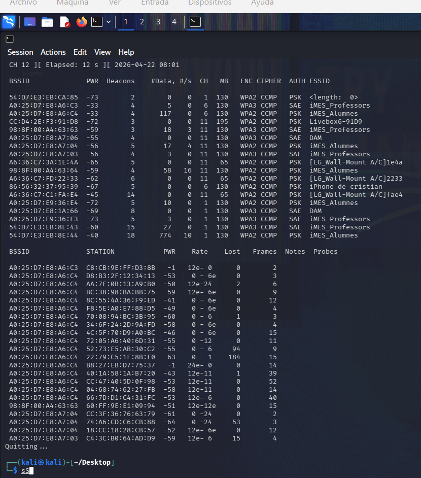
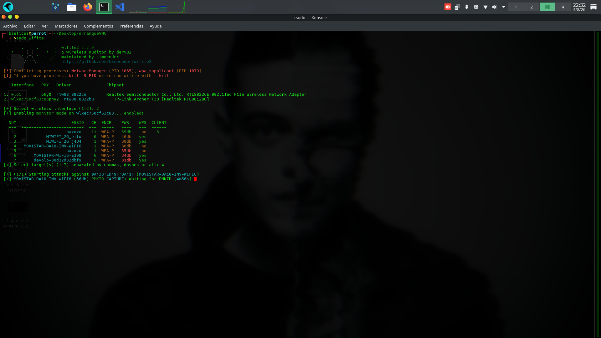
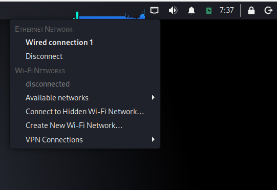
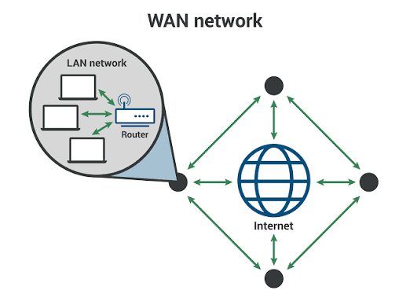

Arsenal de Herramientas
Domina las herramientas esenciales de Kali Linux para Pentesting y OSINT.
WiFi - Auditoría
Aircrack-ng
Suite completa para auditoría de redes WiFi. Crackea claves WEP y WPA/WPA2.
Ver Tutorial
WiFi - Captura
Airodump-ng
Captura paquetes de redes inalámbricas. Esencial para obtener handshakes.
Ver Tutorial
WiFi - Automatización
Wifite
Automatiza ataques WiFi. Escanea, ataca y captura sin intervención manual.
Ver Tutorial
WiFi - WPS
Reaver
Ataque de fuerza bruta contra WPS. Recupera claves PIN en routers vulnerables.
Ver Tutorial
Red - Análisis
Wireshark
El analizador de tráfico de red más potente. Inspecciona paquetes en tiempo real.
Ver Tutorial
Pentesting - Windows
Evil-WinRM
Shell remota para Windows. Ideal para post-explotación tras ganar acceso.
Ver Tutorial
OSINT - Recolección
Soprimico OSINT Tool
Herramienta propia de recolección de información. Emails, redes, dominios.
Ver Tutorial
Red - Análisis
WAN Analysis
Monitoreo de red de área amplia. Detecta intrusiones y anomalías.
Ver Tutorial